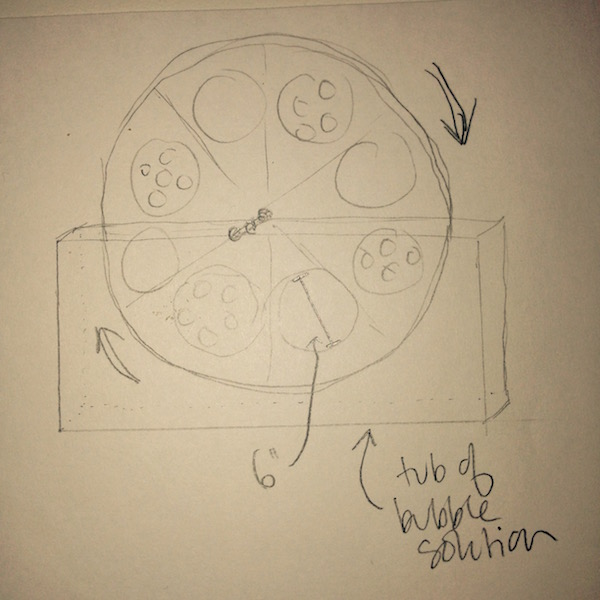
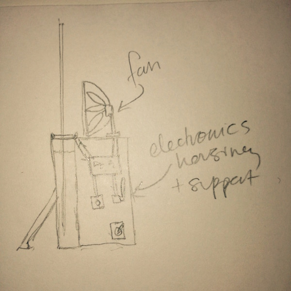

Even though I have spent all summer jotting down potential How To Make (HTM) project ideas, I naturally decided to think up something completely different during an early-morning brainstorming session. Hopefully this will not be a recurring theme for the course... I knew that I wanted to make something interactive, and whimsical, and cycled through a lot of ideas involving maps and bicycles (two passions of mine that will definitely resurface in this course). Ultimately, I've decided to make (or at least produce a design for) a voice or sound controlled bubble machine that can modulate the size of bubbles. This past weekend I walked by the "Bubble Daze" event at the Boston Children's Museum, which clearly produced a lot of joy. Also, what better way to relax when stressing about something like your first homework assignment in two years than to watch some beautiful bubbles? The more I thought about this option, the more it seemed to fulfull a few desirable criteria:
- Requires integration of different skills that I will hopefully learn during the course (electronics design, laser-cutting, construction, networking)
- Is whimsical, interactive, and intuitive to use
- Combines mechanical movement and synthetic materials with natural and organic forms
- Scope of the project be scaled up or (more likely) down depending on how ambitious I feel


Here are some of the components that will be required for this project, a few ideas about how they will operate and how I might make them:
- Fan controlled by a servo motor, that can change its power & speed based on user input (slower and stronger to blow bigger bubbles, faster and weaker for smaller bubbles. If I am feeling ambitious, I think I could 3D print fan wings and attach them to a rotating servo. This would also be a relatively easy part to outsource, as there are a number of sites that sell cheap hobby fans
- Tub full of bubble solution - as skinny and tall as possible to minimize the amount of solution needed. I could make this myself by mixing dishsoap and water. One possible extension for the project would be to have the bubble machine sense when the solution is running low, and then pour or mix new solution. In practice this will probably be done by hand.
- A spinning wheel that is half-submerged in the tub and will rotate so that all parts of the wheel dip into the solution. The wheel will be divided into eights - four sections will be for "big bubbles" (one opening that's ~6" in diameter); the other four will be for "small bubbles" (several openings about ~1" in diameter each). There will be two layers for the spinning wheel. The layers will rotate against one another, controlled by different servos (?), and one will act as a "mask" for the other, either allowing big bubbles or small bubbles.
- Inside the electronics housing, there will be a microcontoller that controls the speed/ power of the fan, the speed of the spinning wheel, and can also instruct the layers of the wheel to rotate against each other. There will also be a noise sensor - when noise volume crosses a certain threshold, the bubble size will shift from small to big (or vice versa). Alternately, I could write a mobile app that connected to the machine via Bluetooth to set the bubble size. Or I could use a physical switch/ button on the machine to manually set bubble size.
- Depending on the board used to drive the motors, they could either be powered directly from an outlet, or could use batteries. In my somewhat limited experience with such things, getting power from an outlet tends to reduce complexity and extend battery life. If I used batteries, I would also have an "on/ off" switch so that the machine could save battery life more easily.
- Thoughts on scale: While I would love to have a machine that can produce those gigantic bubbles (like in the video above), I think something a big smaller will be more manageable. My biggest concern for scale is that the servos spinning the bubble wheel won't produce enough torque to turn the layers of the wheel against each other. I think a spinning wheel with a diameter of 18" - 24" would strike the right balance.
- Thoughts on material: Given that several of the materials need to be able to get wet, I imagine acrylic plastic will be most appropriate for this project. I like the idea of using clear acrylic plastic so that users/ viewers can see the inner mechanics of the machine.
I have very little experience with modeling or CAD software, so I decided to try out a few different programs to build familiarity with them.
This is just a dummy page that I built so that I have a template for what project pages look like, so that I don't have to scramble to build something once the fall arrives.